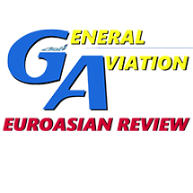

Here you can read our Journal “General Aviation EuroAsian Review” in English. Published since 1995, our Journal covers flying Para gliders to Light Aircraft and Helicopters, and which Ukrainian and Russian companies manufacture products for these markets.
The first printed English language issue of our Journal in English was end 2000 (GA№1’2000 in CIS). It took another fifteen years till the next English language issue in 2015. During the interim we continually investigated the eastern aviation markets. Reports on this research in English attracted the attention of aviators in many different countries.
January 2015 you can subscribe again to an all new issue of our journal in English.
Sergey Araslanov,